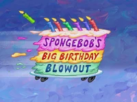
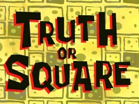

Pagina de bob esponja by
Hector Martinez is licensed under
CC BY-NC-SA 4.0


| Extra | ||||
|---|---|---|---|---|
| Capitulos especiales de la serie | ||||
| |
 | |
 | |
| |
|
|||
Pagina de bob esponja by
Hector Martinez is licensed under
CC BY-NC-SA 4.0
|
||||